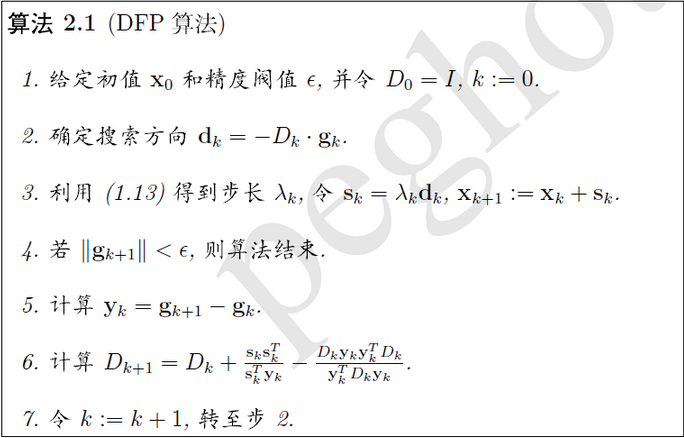

无约束优化算法总结
机器学习的优化目标一般可以表示成Obj = Loss + regularization，有了这样一个优化目标剩下就是如何求解最小化问题了。机器学习绝大多数Obj都是非线性的，很难有形式解，这时需要各种近似优化算法来求Obj的极小化。如果Obj是凸函数，那么极小值等价于全局最小值，否则极小值未必是全局最优值。这里将Obj抽象为f(x)，并假设f为凸函数，且二阶连续可导。
梯度下降法
这个很常见也很简单，参数修正方向就是负梯度方向，步长可以定长也可以单独优化，即Xk+1 = Xk – lambda*grad.
牛顿法
牛顿法最初就是用来迭代求解方程根，想必大家高中时候都接触过。原理是利用泰勒公式在x0处一阶展开，即f(x)=f(x0)+f’(x0)(x-x0)。求解方程f(x)=0得，x=x1=x0-f(x0)/f’(x0)，由于泰勒展开只是近似等价，所以这里的x1也只是比x0更接近f(x)=0的近似解，所以需要不断的迭代来逼近真实x。牛顿法通过下图一目了然：
牛顿法不是用来求根的吗，那怎么用来求最优化？直观的，求f(x)的最小值，必要条件是f’(x)=0，so，可以用牛顿法来求f’(x)=0的解！
下面还是来公式推导下，还是利用泰勒公式,二阶展开，f(x+deltax)=f(x)+f’(x)deltax+1/2f’’(x)deltax^2。当deltax无限趋近于0，上面式子近似为f’(x)deltax+f’’(x)deltax^2=0，即deltax = - f’(x)/f’’(x)。所以迭代公式为xk+1 = xk-f’(x)/f’’(x)。
牛顿法比梯度下降更容易收敛，速度更快，一般认为牛顿法利用了曲线更多的信息（二阶导数）。根据wiki上的解释，从几何上说，牛顿法就是用一个二次曲面去拟合你当前所处位置的局部曲面，而梯度下降法是用一个平面去拟合当前的局部曲面，通常情况下，二次曲面的拟合会比平面更好，所以牛顿法选择的下降路径会更符合真实的最优下降路径（from 知乎）。如下形象图，红色曲线是利用牛顿法迭代求解，绿色曲线是利用梯度下降法求解。
扩展下对于多元x，梯度变为梯度向量，二阶导变为海森矩阵(Hessian matrix)，分别用字母g和H表示，迭代方向变为-H^-1g称为牛顿方向。

阻尼牛顿法相比牛顿法增加了步长lambda的精确搜索。
拟牛顿法
牛顿法存在两个主要缺点：
1. 需要计算海森矩阵和它的逆，计算复杂度高而且空间复杂度为O(N^2)
2. 有时海森矩阵无法保证正定，算法失效。
针对上面问题，研究者提出拟牛顿法(Quasi-Newton methond)，基本思想是不直接求海森阵或其逆，而是通过梯度构造出海森矩阵(或其逆)的近似，而且是正定对称的。
符号上用B表示对海森矩阵H的近似，D表示对逆矩阵H^-1的近似，Sk=Xk+1-Xk，yk=gk+1-gk。
各种拟牛顿法都需要满足拟牛顿条件：yk=Bk+1Sk或者Sk=Dk+1yk。下面大致介绍下DFP/BFGS/L-BFGS拟牛顿算法。
1. DFP算法

在步骤3还需要计算gk+1，下同。
2. BFGS算法
这时从海森阵计算逆计算量也不小，通过Sherman-Morrison公式，可以直接得到B的逆的递推关系，将B的逆替换为D，这样我们得到另一种BFGS。
3.L-BFGS算法
上面的拟牛顿法都没有解决空间复杂度O(N^2)的问题，为了解决该问题，我们就不能存储海森或其逆矩阵了。想想时间换空间，我们就只能存储生成海森的s和y向量了，需要海森时计算得出。而且，向量s和y也不是所有都存，而是固定存最新的m组。每次计算D时，只利用最新的m组s和y，这样空间复杂度降到了O(mN).
若记ρk=1/yk^T*sk，Vk=I-ρkyksk^T，算法2.3的步骤6可以近似为
由于V和ρ标号增加方向相反所以需要前后分别遍历，总计两次遍历才能计算D。
由BFGS算法流程可知，求Dk*gk获取搜索方向才是最终目的，因此论文(updating quasi-newton matrices with limited storage)设计出了一种Dk*gk快速算法：
注意倒数第二行beta应该是i下标，最后算出的rL即为Dk*gk的值。
后记
本文算法截图来自博客(http://blog.csdn.net/itplus/article/details/21897715) ,感谢原作者的分享。
上面讨论的都是f(x)可导的情况，针对不可导还有一些变种算法，比如OWL-QN，有时间再研究总结。